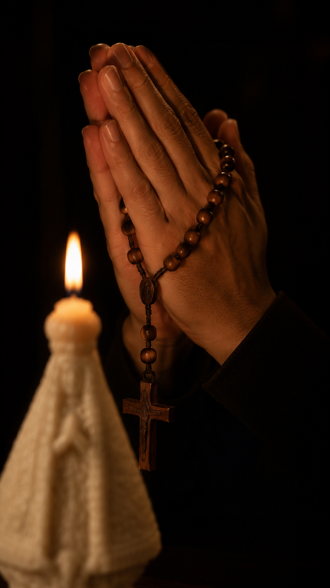

Você já tentou de tudo. Já implorou, já ameaçou, já chorou escondida no banheiro pra ele não ver. Já acreditou em promessa que durou três dias. O vício não é só uma escolha errada repetida, é uma prisão espiritual que aperta um pouco mais a cada noite que passa em silêncio. Sejamos honestas: nenhuma vela apaga vício sozinha, desconfie de quem prometer isso. E você não fracassou em nenhuma daquelas tentativas, fez o que dava com o que tinha, cada vez que tentou. Agora existe uma coisa que você ainda não tentou. A Vela da Liberdade é um kit de nove velas esculpidas à mão. Uma para cada noite da novena, porque uma corrente que levou anos pra se formar, elo por elo, não arrebenta com uma oração isolada de uma noite só: arrebenta com nove noites seguidas de guerra, uma vela de cada vez, até o último elo ceder. Feita pra quem decidiu que essa corrente não vai mais governar a própria casa. Feita pra quem já consegue imaginar a primeira noite em que o telefone toca de madrugada e não é a notícia que você mais teme, é só a voz de quem você ama, dizendo que chegou bem em casa.
9 velas artesanais, uma pra cada noite da sua guerra contra o vício, até a corrente cair.
Cera vegetal, sem fuligem de parafina, arde em média 3 a 5 horas, o tempo certo pra cada noite de oração.
7cm de altura aprox., cabe no altar, na cômoda, na mesa de cabeceira de quem está esperando o filho voltar pra casa.
Embalagem para presente incluída, caixa com papel de seda e laço, pronta pra entregar sem precisar dizer uma palavra.
Produção artesanal em lote único de 100 unidades. O próximo só sai depois que este esgotar, feita por artesãos brasileiros que entendem o peso dessa oração.
Feita à mão
Nenhuma corrente se quebra com pressa
Cada vela é moldada manualmente em cera vegetal derretida. Despejada em moldes que carregam a intenção de quem as fez: libertação. Não é produção industrial em série. É um processo lento, quase teimoso, do jeito que uma batalha espiritual de verdade também é.
O que chega na caixa que começa a sua guerra
9 velas numeradas por noite
Uma sequência clara, pra você não perder o fio da corrente que está sendo cortada.
Cartão com o roteiro da novena da liberdade
O passo a passo de cada noite, escrito pra quem está exausta de rezar sozinha.
Embalagem pronta para presentear
Caixa com papel de seda e laço, pra você entregar de mão em mão pra quem precisa ouvir "eu não desisti de você".
Cera vegetal de queima limpa
Sem parafina de origem duvidosa. Arde limpo, arde firme, por até 5 horas de vigília a cada noite.
A novena dos nove dias: o elo que arrebenta noite após noite
Uma vela por noite, na ordem, até o último elo ceder
Antes de começarEscolha um lugar fixo (altar, cômoda, mesa de cabeceira) onde as nove velas vão ficar até o fim da novena. Esse será o seu ponto de guerra.
A cada noiteAcenda a vela do dia. Olhe pro fogo. Diga em voz alta o nome de quem você está lutando por libertar, ou o seu próprio nome, se for você quem está tentando sair. Apague, e já sinta a chama de amanhã esperando: cada noite prepara a seguinte, até a nona.
Ao finalComplete a nona noite com a última vela acesa. Cada noite que essa chama arde é uma noite a menos de escravidão. Imagine agora: a manhã seguinte à última noite, você acorda e sabe, no fundo do peito, que rezou até o fim, e essa corrente não teve chance.
Nenhuma corrente arrebenta sozinha
Você já viu como as nove noites conduzem a quebra. Falta acender a primeira.
Não precisa de altar grande nem de espaço reservado. Uma cômoda, uma mesa de cabeceira, o cantinho onde você já costuma chorar escondida, já bastam. A vela é o ponto fixo que te chama de volta, noite após noite, até a corrente ceder.
Para quem você não desistiu
Chega pronta pra dar, mesmo quando as palavras não chegam
Cada kit sai embalado em caixa própria, com papel de seda e laço. Se for pra entregar pro filho, pro marido, pra irmã que está lutando, não precisa embrulhar nada, nem explicar tudo. Às vezes uma vela na mão diz o que a boca não consegue.
Você não está rezando sozinha
Esse lote de 100 velas não foi pensado pra você acender sozinha no escuro. Foi pensado pra cada mãe, cada esposa, cada filho que está exatamente onde você está agora, rezando pela mesma súplica: ver quem eles amam voltar a ser quem era antes do vício tomar conta. Você não vê as outras chamas acesas essa noite. Mas elas existem. E a sua vai se juntar a elas.

Famílias que viraram a chave
"Eu já tinha desistido de rezar. Meu filho tava há três anos entrando e saindo de recaída, e eu só sabia chorar de madrugada. Comecei a novena sem esperar nada, só porque não tinha mais o que fazer. Na sétima noite ele me ligou chorando, pedindo ajuda pra procurar tratamento. Não foi mágica, eu sei que a luta dele continua até hoje, mas alguma coisa se moveu dentro dele naquela semana, e dentro de mim também."
Marlene A.
Contagem, MG
"Comprei pra mim mesma. Eu era a que bebia escondido, jurava que era só socialmente. Acendia a vela e não conseguia nem olhar pro fogo direito de vergonha. Na quinta noite chorei o que não chorava há anos. No dia seguinte liguei pra um grupo de apoio pela primeira vez na vida. A vela não me curou sozinha, mas foi ela que me fez admitir que eu precisava de ajuda de verdade."
Renata S.
Joinville, SC
"Meu marido é dependente há 12 anos. Já perdi a conta de quantas promessas ele quebrou. Fiz a novena inteira sozinha na cozinha, depois que ele dormia. Não vou mentir dizendo que ele saiu curado no nono dia. Mas aquela semana me devolveu a fé de que eu não estava lutando à toa, e isso me deu forças pra insistir com ele até ele aceitar entrar num programa de tratamento. Hoje ele está no quarto mês limpo."
Cristiane M.
Feira de Santana, BA
"Sou filha de dependente e comprei achando que era besteira, mas tava desesperada. Fiz a novena pelo meu pai, mesmo ele nem sabendo. Na quarta noite chorei tanto na frente da chama que nem consegui terminar a oração, e foi ali que entendi que a raiva que eu carregava também precisava ser curada. Não posso dizer que ele parou, ele ainda está lutando. Mas eu parei de sentir aquele ódio que carregava há anos. A vela não libertou ele ainda, mas libertou algo em mim que estava preso junto com ele."
Juliana P.
Caxias do Sul, RS
Mais depoimentos serão adicionados aqui conforme chegam: prints de avaliação, fotos enviadas e relatos do Instagram de quem já viveu a novena da liberdade.
As perguntas que você tem vergonha de fazer em voz alta
A vela substitui tratamento, internação ou acompanhamento médico?+
Não, e é importante ser honesta com você sobre isso: a Vela da Liberdade é um instrumento de fé e suporte espiritual, não um substituto de tratamento médico, terapia, internação ou grupos de apoio. A fé é a força que sustenta quem está lutando e quem está esperando. O tratamento é o caminho real de recuperação. Os dois andam juntos: a vela não troca ajuda profissional, ela caminha ao lado dela, dando fôlego espiritual pra quem precisa continuar lutando ou continuar rezando.
De que material é feita a vela?+
Cera vegetal, moldada à mão em fôrmas próprias. Não usamos parafina de origem duvidosa. A queima é limpa, com fumaça reduzida comparada a velas industriais comuns, pensada pra arder do lado de quem está em vigília de oração.
Quanto tempo cada vela dura acesa?+
Cada vela tem cerca de 7cm de altura e queima em média entre 3 e 5 horas contínuas, o suficiente pro momento de oração da noite. Recomendamos apagar e guardar entre uma noite e outra da novena.
É seguro acender em casa?+
Sim, seguindo os cuidados básicos de qualquer vela: acender sobre superfície resistente ao calor, longe de cortinas e materiais inflamáveis, nunca deixar sem supervisão e manter fora do alcance de crianças e animais.
Posso fazer a novena por outra pessoa, sem ela saber?+
Sim. Muitas mães, esposas e filhos fazem essa novena em silêncio, pela pessoa que amam, mesmo sem ela estar por perto ou saber. A intercessão é justamente isso: você levanta a chama por quem ainda não consegue levantar a própria.
O kit vem com instruções da novena?+
Sim. O Kit Novena Completo acompanha um cartão simples com o roteiro das nove noites, pra te ajudar a manter o ritual do início ao fim, mesmo nos dias em que a esperança parecer mais fraca.
Qual o prazo de entrega?+
Como cada lote é produzido artesanalmente e em quantidade limitada, o prazo de envio pode variar. Assim que seu pedido for despachado, você recebe o código de rastreio por e-mail. O envio é discreto, sem identificação do conteúdo na embalagem.
Posso comprar para presentear?+
Sim, todos os kits já saem embalados prontos para presente, com caixa, papel de seda e laço. Não é necessário embrulhar, é só entregar, do jeito que muitas famílias fazem quando as palavras não dão conta.
Garantia de 7 dias, risco zero: chegou com defeito, você troca sem pagar nada
A luta que você está travando já é grande demais pra você também se preocupar com isso. Por isso, se sua vela chegar danificada ou com algum defeito de fabricação, trocamos sem custo. É só entrar em contato com uma foto do produto recebido em até 7 dias após a entrega.
Nove noites para arrancar o que te domina
Uma vela por noite, sem interromper. O ciclo começa na noite em que o kit chegar.
Produção artesanal em lotes limitados. Lote atual: 100 unidades. Novo lote só depois que este esgotar. A Vela da Liberdade é um instrumento de fé e suporte espiritual, não substitui tratamento médico, psicológico ou acompanhamento especializado para dependência química ou comportamental.